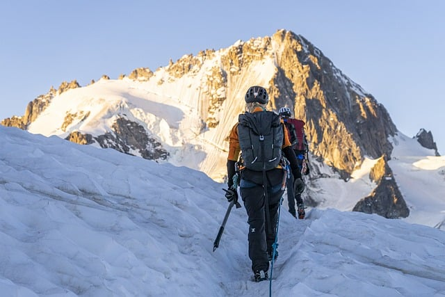

Przewodnik po Niezwykłych Miejscach
Wyprawa w góry wysokie – Jak się przygotować?
Planujesz podróż w wysokie góry? Zobacz nasze porady, jak się przygotować, co zabrać i na co zwrócić uwagę...
Czytaj więcejPodróż daleko od cywilzacji - Na co być przygotowanym?
Chcesz udać się w miejsce daleko od ludzi? Oto nasz poradnik, jak przetrwać w ekstremalnych warunkach...
Czytaj więcej
Anna K. - "Polecam trasę X w Alpach. Piękne widoki, ale trzeba być przygotowanym na zmienne warunki pogodowe."
Jan Z. - "Warto założyć obuwie, które ułatwi podróż przez piasek. Warto też pamiętać o kurtce, gdyż temepratura nocami bywa niska."